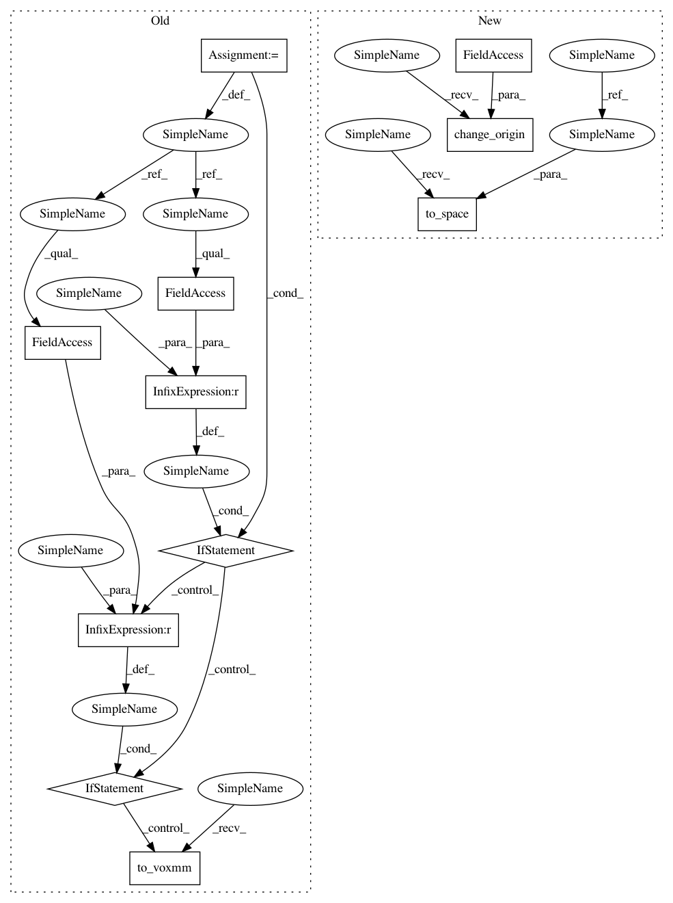

a42e7a7aaab7e6034cd2bca9bfc045dba983fb51,dipy/io/stateful_tractogram.py,StatefulTractogram,remove_invalid_streamlines,#StatefulTractogram#,391
Before Change
data_per_streamline=tmp_data_per_streamline,
affine_to_rasmm=np.eye(4))
if old_space == Space.RASMM:
self.to_rasmm()
elif old_space == Space.VOXMM:
self.to_voxmm()
if not old_origin:
self.to_center()
return indices_to_remove, indices_to_keep
After Change
if not self.streamlines:
return
old_space = deepcopy(self.space)
old_origin = deepcopy(self.origin_at_corner)
self.to_vox()
self.to_corner()
min_condition = np.min(self._tractogram.streamlines.data,
axis=1) < 0.0
max_condition = np.any(self._tractogram.streamlines.data >
self._dimensions, axis=1)
ic_offsets_indices = np.where(np.logical_or(min_condition,
max_condition))[0]
indices_to_remove = []
for i in ic_offsets_indices:
indices_to_remove.append(bisect(
self._tractogram.streamlines._offsets, i) - 1)
indices_to_keep = np.setdiff1d(np.arange(len(self._tractogram)),
np.array(indices_to_remove)).astype(int)
tmp_streamlines = self.streamlines[indices_to_keep]
tmp_data_per_point = self._tractogram.data_per_point[indices_to_keep]
tmp_data_per_streamline =\
self._tractogram.data_per_streamline[indices_to_keep]
self._tractogram = Tractogram(tmp_streamlines.copy(),
data_per_point=tmp_data_per_point,
data_per_streamline=tmp_data_per_streamline,
affine_to_rasmm=np.eye(4))
self.to_space(old_space)
self.change_origin(old_shift)
return indices_to_remove, indices_to_keep
def _get_streamline_count(self):
In pattern: SUPERPATTERN
Frequency: 3
Non-data size: 11
Instances
Project Name: nipy/dipy
Commit Name: a42e7a7aaab7e6034cd2bca9bfc045dba983fb51
Time: 2019-12-16
Author: francois.m.rheault@usherbrooke
File Name: dipy/io/stateful_tractogram.py
Class Name: StatefulTractogram
Method Name: remove_invalid_streamlines
Project Name: nipy/dipy
Commit Name: a42e7a7aaab7e6034cd2bca9bfc045dba983fb51
Time: 2019-12-16
Author: francois.m.rheault@usherbrooke
File Name: dipy/io/stateful_tractogram.py
Class Name: StatefulTractogram
Method Name: is_bbox_in_vox_valid
Project Name: nipy/dipy
Commit Name: a42e7a7aaab7e6034cd2bca9bfc045dba983fb51
Time: 2019-12-16
Author: francois.m.rheault@usherbrooke
File Name: dipy/io/streamline.py
Class Name:
Method Name: save_tractogram